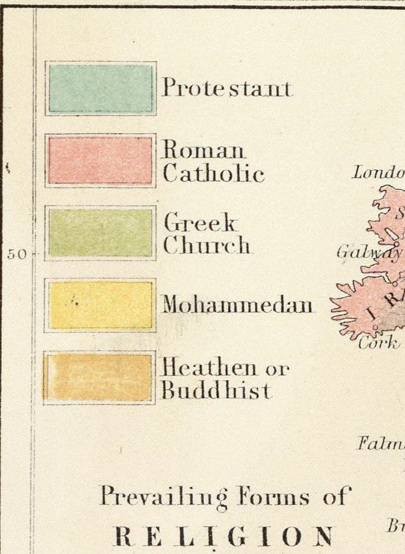

Historical maps provide us with a cloudy window into the past. Sometimes, what you see through that window is silly. Below is the legend from A. Keith Johnston’s 1854 Moral & statistical chart showing the geographical distribution of man according to religious belief, with the principal Protestant mission stations in the middle of the 19th century in the Rumsey Collection.


Because, really, what's the difference?